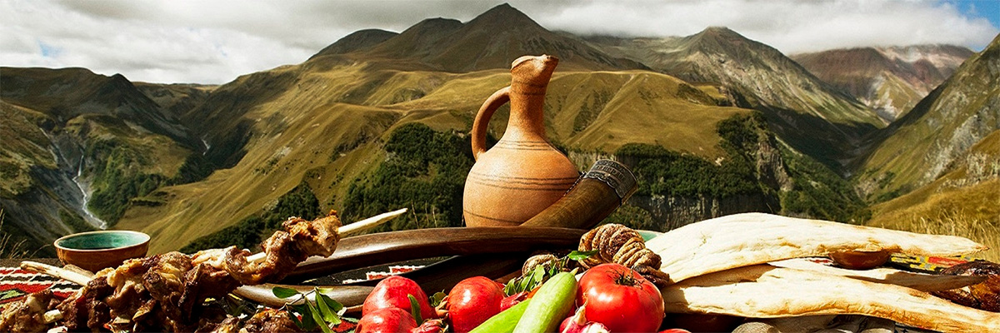

Самые свежие новости Новосибрской области
В Новосибирске открылась IKEA со всего мира
По словам местных жителей, магазин небольшой, и цены выше в два-три раза, а товары действительно похожи на оригинальные
IKEA снова открылась в Новосибирске. Магазин под новым называнием «IKEA со всего мира» продает товары шведской компании. Об открытии магазина сообщили подписчики новосибирского телеграм-канала «АСТ-54 Black». По сообщению паблика, цены на продукцию в магазине в два раза выше, чем были до закрытия в декабре.
Сегодня — первый день, когда магазин начал свою работу, — говорится в сообщении АСТ-54.
Однако многих людей это не остановило, и они принялись узнавать адрес магазина в комментариях для последующей закупки.
— Подскажите адрес.
— Принципиально не пойду, зачем спонсировать эту компанию? Не хотят работать с русскими — всего хорошего!
— Надо обязательно сходить и что-нибудь прикупить.
Напомним, что IKEA в Новосибирске закрылась — 4 марта 2022 года.
Ранее редакция сообщала о том, что ни один экс-сотрудник новосибирской IKEA не стоит на бирже труда.